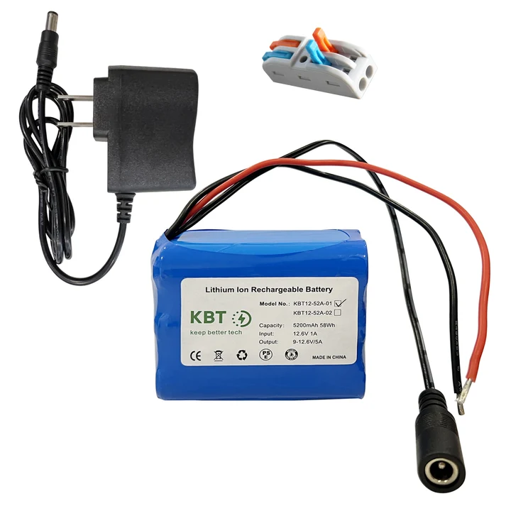

The 48v 20000mAh battery sits on top of the robot and should be held in place with velcro straps. It should be placed such that the battery's text is facing the front of the robot and is right side up. This should place the female cables of the battery to the robot's right side. The male end of the power cable can be found on the right side of the robot as well. Plug in the battery to the robot. If the emergency stop button is depressed, turn the button clockwise until it is rasied again. The robot is now on.
The much smaller 12v 5200mAh Ion Rechargeable Battery needs to be directly plugged into the LattePanda computer. If the computer is not already out of the electronic componets box, now is the time to remove it. The battery should be plugged into the computer with a USB-C to DC power cable. Plug in the battery. A red LED will begin blinking indicating the computer has power. On the computer, press the small white button (located by the HDMI port) until a blue LED turns on. The computer is now on.
